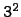
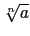
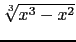

suivant: Les fonctions prefixées de
monter: Les réels
précédent: Évaluer un réel et
Table des matières
Index
Les fonctions infixées de base sur les réels : +,-,*,/,^
+,-,*,/,^ sont les opérateurs habituels pour faire
des additions, des soustractions, des multiplications, des divisions et des
élévations à une puissance entière ou fractionnaire.
On tape :
3+2
On obtient :
5
On tape :
3-2
On obtient :
1
On tape :
3*2
On obtient :
6
On tape :
3/2
On obtient :
3/2
On tape :
3.2/2.1
On obtient :
1.52380952381
On tape :
3^2
On obtient :
9
On tape :
3.2^2.1
On obtient :
11.5031015682
Remarque
Si vous avez une touche carrée ou une touche cube sur votre clavier vous
pouvez l'utiliser, par exemple :  vaut 9.
Remarque sur les puissances fractionnaires
Par définition
afracpq = exp(fracpq*ln(a)) et donc
afracpq
n'est défini que pour a > 0.
Il y a donc une différence entre :
 et
afrac1n lorsque n est impair.
Si on veut, par exemple, tracer la courbe
y = , il faut
taper :
plotfunc([(x^3-x^2)^(1/3),-(x^2-x^3)^(1/3)],x,xstep=0.01)
on peut aussi taper :
plotimplicit(y^3=x^3-x^2)
suivant: Les fonctions prefixées de
monter: Les réels
précédent: Évaluer un réel et
Table des matières
Index
Documentation de giac écrite par Renée De Graeve